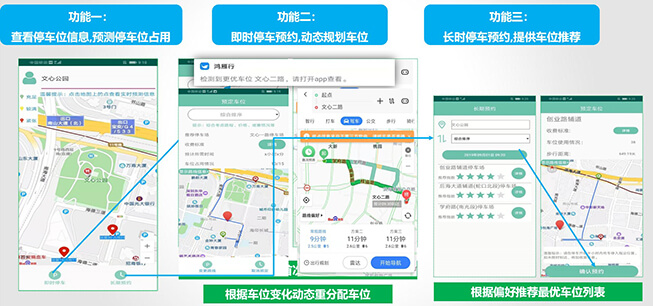
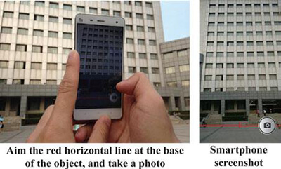
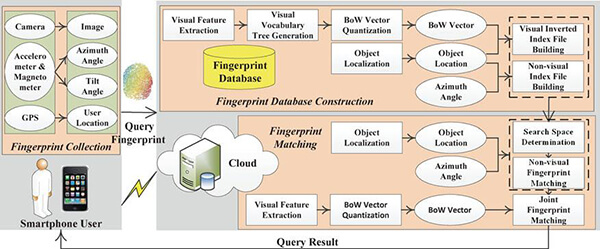
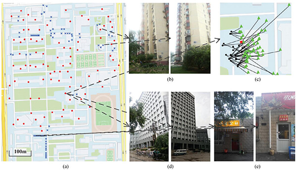
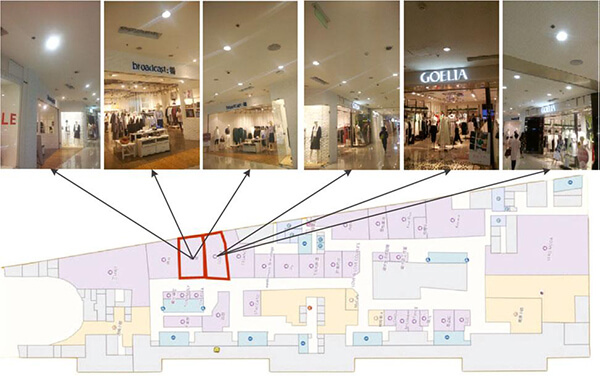
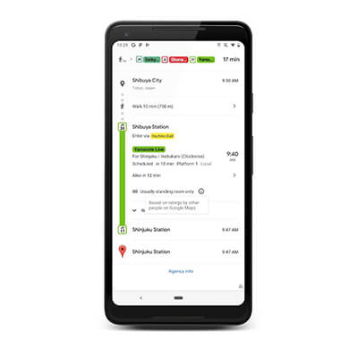
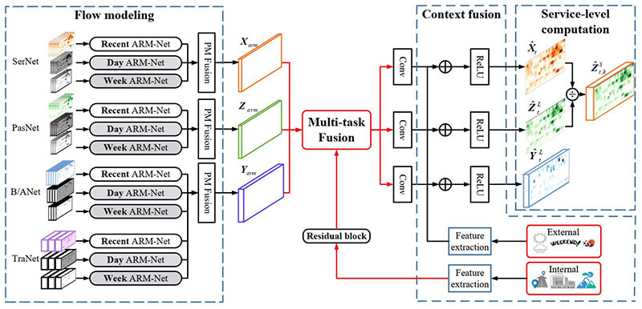
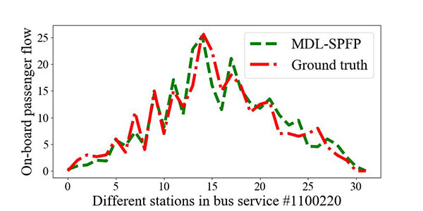

赵东
副教授，博士生导师智能通信软件与多媒体北京市重点实验室
北京邮电大学，计算机学院
办公地址: 北京市海淀区西土城路10号教三楼
办公电话: +86-10-62282767
Email: dzhao AT bupt.edu.cn / zhaodong86 AT gmail.com
Google Scholar Citations|DBLP|English personal HomePage
个人简介
赵东，北京邮电大学计算机学院副教授，博士生导师。主要研究方向为物联网、移动感知、城市计算与大数据等。近5年来主持或参与国家自然科学基金、重点研发计划、企事业合作项目等10余项。在移动群智感知、城市感知计算等领域取得一系列创新性成果，在IEEE/ACM汇刊（TON/TPDS/TMC/TITS/TVT/THMS/TII/TBD）、IEEE Communications Magazine、IEEE INFOCOM、ICME、GLOBECOM等国际著名期刊和会议发表论文50余篇，出版学术专著1本；获得中国计算机学会优博论文奖、ACM北京优博论文奖、国家教学成果二等奖、教育部自然科学一等奖、中国计算机学会自然科学一等奖、北京市教学成果一等奖等奖励和荣誉，入选第四届中国科协青年人才托举工程。目前是中国通信学会高级会员，中国计算机学会/IEEE/ACM会员；曾担任10余个国际著名会议（ACM MobiHoc、IEEE DCOSS/GLOBECOM/MASS等）程序委员/专题讨论会主席/宣传主席，以及10余个国际一流刊物（TON/TMC/TMM/TIST等）审稿人。
赵东，北京邮电大学计算机学院副教授，博士生导师。主要研究方向为物联网、移动感知、城市计算与大数据等。近5年来主持或参与国家自然科学基金、重点研发计划、企事业合作项目等10余项。在移动群智感知、城市感知计算等领域取得一系列创新性成果，在IEEE/ACM汇刊（TON/TPDS/TMC/TITS/TVT/THMS/TII/TBD）、IEEE Communications Magazine、IEEE INFOCOM、ICME、GLOBECOM等国际著名期刊和会议发表论文50余篇，出版学术专著1本；获得中国计算机学会优博论文奖、ACM北京优博论文奖、国家教学成果二等奖、教育部自然科学一等奖、中国计算机学会自然科学一等奖、北京市教学成果一等奖等奖励和荣誉，入选第四届中国科协青年人才托举工程。目前是中国通信学会高级会员，中国计算机学会/IEEE/ACM会员；曾担任10余个国际著名会议（ACM MobiHoc、IEEE DCOSS/GLOBECOM/MASS等）程序委员/专题讨论会主席/宣传主席，以及10余个国际一流刊物（TON/TMC/TMM/TIST等）审稿人。
主要学习和工作经历
2014年7月在北京邮电大学获得计算机科学与技术专业博士学位（导师：马华东教授）。2012年10月至2013年10月，作为国家公派联合培养博士生在美国伊利诺伊理工大学计算机系从事访问研究（导师：李向阳教授）；2014年至今在北京邮电大学计算机学院任教；2014年7月至2016年7月在北京邮电大学信息与通信工程博士后流动站从事研究（合作导师：张平院士）；2019年9月至今作为国家公派访问学者在美国罗格斯大学计算机学院从事访问研究。
2014年7月在北京邮电大学获得计算机科学与技术专业博士学位（导师：马华东教授）。2012年10月至2013年10月，作为国家公派联合培养博士生在美国伊利诺伊理工大学计算机系从事访问研究（导师：李向阳教授）；2014年至今在北京邮电大学计算机学院任教；2014年7月至2016年7月在北京邮电大学信息与通信工程博士后流动站从事研究（合作导师：张平院士）；2019年9月至今作为国家公派访问学者在美国罗格斯大学计算机学院从事访问研究。
承担的主要科研项目
- 国家自然科学基金面上项目，“主被动结合的城市移动感知网络协同部署理论与方法研究”，2020.01-2023.12
- 国家科技创新2030新一代人工智能重大项目，“面向城市感知的群智涌现机理与计算方法”，2019.12-2022.12
- 国家自然科学基金重点项目，“面向无人系统的网络协同理论与技术”，2018.01-2022.12
- 国家自然科学基金重点国际合作项目，“智能感知网络及其在智慧城市中应用研究”，2018.01-2022.12
- 国家自然科学基金青年项目，“面向物联网搜索的群智感知关键技术研究”，2016.01-2018.12（已结题）
- 国家自然科学基金重点项目，“移动社交中感知数据收集的机会路由与交互式内容移交”，2014.01-2018.12（已结题）
- 北京邮电大学青年科研创新计划专项，“群智感知网络中实用型激励机制设计及应用”，2017.01-2018.12（已结题）
- 中国博士后面上基金（一等资助），“群智感知网络中用户激励与隐私保护机制研究”，2014.10-2016.06（已结题）
- CCF-腾讯犀牛鸟创意基金，“基于群智感知的移动位置识别研究”，2015.11-2016.11（已结题）
- CCF-腾讯犀牛鸟科研基金，“移动社交中用户个性化激励方法研究”，2013.10-2016.09（已结题）
代表论文
- Dong Zhao, Huadong Ma, Xinna Ji. Generalized Lottery Trees: Budget-Balanced Incentive Tree Mechanisms for Crowdsourcing [J]. IEEE Transactions on Mobile Computing, 2020. (CCF A类)
- Dong Zhao, Xiang-Yang Li, Huadong Ma. Budget-Feasible Online Incentive Mechanisms for Crowdsourcing Tasks Truthfully [J]. ACM/IEEE Transactions on Networking, 2016. (CCF A类)
- Dong Zhao, Huadong Ma, Shaojie Tang, Xiang-Yang Li. COUPON: A Cooperative Framework for Building Sensing Maps in Mobile Opportunistic Networks [J]. IEEE Transactions on Parallel and Distributed Systems, 2015. (CCF A类,ESI High Citation Paper )
- Dong Zhao, Hao Wang, Huadong Ma, Huaiyu Xu, Liang Liu, Ping Zhang. CrowdOLR: Toward Object Location Recognition with Crowdsourced Fingerprints Using Smartphones [J]. IEEE Transactions on Human-Machine Systems, 2017. (CCF B类)
- Dong Zhao, Huadong Ma, Liang Liu. Frugal Online Incentive Mechanisms for Mobile Crowd Sensing [J]. IEEE Transactions on Vehicular Technology, 2016. (JCR 2区)
- Dong Zhao, Xiang-Yang Li, Huadong Ma. How to Crowdsource Tasks Truthfully without Sacrificing Utility: Online Incentive Mechanisms with Budget Constraint [C]. In Proc. of IEEE INFOCOM, 2014. (CCF A类)
- Dong Zhao, Huadong Ma, Shaojie Tang. COUPON: Cooperatively Building Sensing Maps in Mobile Opportunistic Networks [C]. In Proc. of IEEE MASS, 2013. (Best Paper Runner-up Award).
- Liang Liu, Wangyang Wei, Dong Zhao, Huadong Ma. Urban Resolution: New Metric for Measuring the Quality of Urban Sensing [J]. IEEE Transactions on Mobile Computing, 2015. (CCF A类)
- Huadong Ma, Dong Zhao, Peiyan Yuan. Opportunities in Mobile Crowd Sensing [J]. IEEE Commun. Magazine, 2014. (JCR 1区, ESI High Citation Paper)
- Huadong Ma, Liang Liu, Anfu Zhou, Dong Zhao. On Networking of Internet of Things: Explorations and Challenges [J]. IEEE Internet of Things Journal, 2016. (JCR 1区)
- Jianwei Chen, Huadong Ma, Dong Zhao, Liang Liu. Correlated Differential Privacy Protection for Mobile Crowdsensing [J]. IEEE Transactions on Big Data, 2018.
出版专著
- 《移动群智感知网络》，马华东、赵东，清华大学出版社，2019年2月
主要荣誉和奖励
- 2019年，深圳开放数据应用创新大赛数据创意赛道二等奖（全国第3名）
- 2018年，入选第四届中国科协青年人才托举工程
- 2018年，国家教学成果二等奖（排名第6）
- 2018年，ITNAC 2018 Highly Commended Paper Award
- 2017年，教育部自然科学一等奖（排名第4）
- 2017年，中国计算机学会自然科学一等奖（排名第4）
- 2017年，北京市教学成果一等奖（排名第6）
- 2015年，中国计算机学会优博论文奖
- 2015年，ACM北京优博论文奖
- 2015年，CCF-腾讯犀牛鸟创意基金奖
- 2014年，A3 Annual Workshop Best Presentation Award
- 2014年，北京邮电大学优博论文奖
- 2013年，IEEE MASS Best Paper Runner-up Award
主要学术服务工作
[国际学术会议服务]
[担任以下国际会议期刊审稿人]
[国际学术会议服务]
- Publicity Chair of ACM MobiHoc 2020
- TPC Member of IEEE ICPADS 2019, IEEE MASS 2019, CISC 2019, CoWireless 2019, IEEE ICA3PP 2017, IEEE GLOBECOM 2016, IEEE DCOSS 2015
- Organizer and Chair of IEEE ICME'19 workshop on Multimedia for Robot, Unmanned Aerial Vehicle and Driverless Car (MRUD)
- Organizer and Chair of the PCM 2016 special session "Leveraging Crowdsourced and User-generated Data for Multimedia Applications"
[担任以下国际会议期刊审稿人]
- IEEE/ACM Trans. on Networking, IEEE Trans. on Mobile Computing, IEEE Trans. on Parallel and Distributed Systems, IEEE Trans. on Wireless Communications, IEEE Trans. on Multimedia, IEEE Trans. on Vehicular Technology, IEEE Trans. on Human-Machine Systems, IEEE Trans. on Cybernetics, IEEE Trans. on Cloud Computing, IEEE Trans. on Services Computing, IEEE Trans. on Big Data, IEEE Journal on Selected Areas in Communications, IEEE Internet of Things Journal, IEEE Communications Magazine, IEEE Communications Letters, ACM Trans. on Sensor Networks, ACM Trans. on Intelligent Systems and Technology, ACM Trans. on Multimedia Computing, Communications, and Applications, Computer Networks, Ad Hoc Networks, Computer Communications, Wireless Networks
部分项目成果展示
-
“iSPark：大数据驱动的智能路内停车管理”，获得深圳开放数据应用创新大赛数据创意赛道二等奖（全国第3名）
该项目针对城市路内停车困难以及带来的交通、能源、环境等诸多问题，基于深圳宜停车、地图POI、交通路网、天气等数据，使用大数据和人工智能技术，提供包含停车位预测、预约及动态分配（推荐）、智能定价、可视化分析等功能为一体的综合解决方案，以手机APP和Web页面等形式为停车管理部门和普通停车用户提供服务，大幅提高城市路内停车管理水平，解决停车难、效率低等问题。  -
“CrowdOLR：基于群智感知的移动位置识别”，获得CCF-腾讯犀牛鸟创意基金奖
该项目结合移动计算、计算机视觉和图像检索等领域的相关方法，基于移动群智感知模式获取由位置图像和多种非视觉感知数据构成的动态位置指纹库，从特征提取融合、指纹库动态更新、信息匹配优化三个方面进行移动位置识别研究，改善识别效率、准确性与成本等多项性能指标，分别基于大学校园和商场两种场景构建移动位置识别原型系统进行应用验证。   -
MDL-SPFP：基于多任务深度学习的公交乘客流预测
谷歌地图在2019年6月27日公布了一项新功能，让通勤者可以看到他们通勤的公交车的拥挤情况。而这项功能的实现主要依靠采集大量的乘客拥挤度实时调查数据，不具有较好的推广性。为此，本项目首次基于公交刷卡数据实现了细粒度的公交乘客流预测，具有很高的预测准确性和可推广性。 
完整论文列表
[期刊]
[会议]
[期刊]
- [1] 赵东，马华东. 群智感知网络的发展及挑战 [J]. 信息通信技术, 2014.
- [2] Dong Zhao, Huadong Ma, and Liang Liu. Energy-efficient Opportunistic Coverage for People-centric Urban Sensing [J]. Wireless Networks, 2014.
- [3] Huadong Ma, Dong Zhao, and Peiyan Yuan. Opportunities in Mobile Crowd Sensing [J]. IEEE Commun. Magazine, 2014. (JCR 1区)
- [4] 赵东，马华东，刘亮. 移动群智感知质量度量与保障[J]. 中兴通讯技术, 2015.
- [5] 马华东，袁培燕，赵东. 移动机会网络路由问题研究进展[J]. 软件学报, 2015.
- [6] Honghai Wu, Huadong Ma, and Dong Zhao. Videocent: a Quality-oriented Incentive Mechanism for Video Delivery in Opportunistic Networks [J]. Wireless Networks, 2015.
- [7] Dong Zhao, Huadong Ma, Shaojie Tang, and Xiang-Yang Li. COUPON: A Cooperative Framework for Building Sensing Maps in Mobile Opportunistic Networks [J]. IEEE Transactions on Parallel and Distributed Systems, 2015. (CCF A类)
- [8] Liang Liu, Wangyang Wei, Dong Zhao, and Huadong Ma. Urban Resolution: New Metric for Measuring the Quality of Urban Sensing [J]. IEEE Transactions on Mobile Computing, 2015. (CCF A类)
- [9] Dong Zhao, Huadong Ma, Liang Liu, and Xiang-Yang Li. Opportunistic Coverage for Urban Vehicular Sensing [J]. Computer Communications, 2015.
- [10] Dong Zhao, Huadong Ma, and Liang Liu. Heterogeneous Coverage Analysis for Collaborative Classification in Multimedia Sensor Networks [J]. Ad Hoc & Sensor Wireless Networks, 2015.
- [11] Dong Zhao, Xiang-Yang Li, and Huadong Ma. Budget-Feasible Online Incentive Mechanisms for Crowdsourcing Tasks Truthfully [J]. ACM/IEEE Transactions on Networking, 2016. (CCF A类)
- [12] Shuyun Luo, Yongmei Sun, Yuefeng Ji, and Dong Zhao. Stackelberg Game Based Incentive Mechanisms for Multiple Collaborative Tasks in Mobile Crowdsourcing [J]. Mobile Networks and Applications, 2016.
- [13] Huadong Ma, Liang Liu, Anfu Zhou, and Dong Zhao. On Networking of Internet of Things: Explorations and Challenges [J]. IEEE Internet of Things Journal, 2016. (JCR 1区)
- [14] Jianwei Chen, Huadong Ma, and Dong Zhao. Private Data Aggregation with Integrity Assurance and Fault Tolerance for Mobile Crowd-Sensing [J]. Wireless Networks, 2017.
- [15] Dong Zhao, Huadong Ma, and Liang Liu. Frugal Online Incentive Mechanisms for Mobile Crowd Sensing [J]. IEEE Transactions on Vehicular Technology, 2017. (JCR 2区)
- [16] Wu Liu, Huadong Ma, Heng Qi, Dong Zhao and Zhineng Chen. Deep Learning Hashing for Mobile Visual Search [J]. EURASIP J. Image and Video Processing, 2017.
- [17] Dong Zhao, Hao Wang, Huadong Ma, Huaiyu Xu, Liang Liu, Ping Zhang. CrowdOLR: Toward Object Location Recognition with Crowdsourced Fingerprints Using Smartphones [J]. IEEE Transactions on Human-Machine Systems, 2017. (CCF B类)
- [18] Dong Zhao, Huaiyu Xu, Jiaqi An, Liang Liu, Huadong Ma. ISR: Indoor Shop Recognition Via User-friendly and Efficient Fingerprinting on Smartphones [J]. Machine Vision and Applications, 2017.
- [19] Jianwei Chen, Huadong Ma, Dong Zhao, David S. L. Wei. Participant Density-Independent Location Privacy Protection for Data Aggregation in Mobile Crowd-Sensing [J]. Wireless Personal Communications, 2018.
- [20] Dong Zhao, Huadong Ma, Qi Li, and Shaojie Tang. A unified delay analysis framework for opportunistic data collection [J]. Wireless Networks, 2018.
- [21] Hao Wang, Dong Zhao, Huadong Ma. Informative Image Selection for Crowdsourcing-based Mobile Location Recognition [J]. Multimedia Systems, 2019.
- [22] Jianwei Chen, Huadong Ma, Dong Zhao, Liang Liu. Correlated Differential Privacy Protection for Mobile Crowdsensing [J]. IEEE Transactions on Big Data, 2018.
[会议]
- [1] Qi Li, Huadong Ma, Dong Zhao. A Neural Network Based Framework for Audio Scene Analysis in Audio Sensor Networks [C]. In Proc. of PCM, 2009.
- [2] Dong Zhao, Huadong Ma, Liang Liu. Event Classification for Living Environment Surveillance Using Audio Sensor Networks [C]. In Proc. of IEEE ICME, 2010. (CCF B类)
- [3] Dong Zhao, Huadong Ma, Liang Liu. Analysis for Heterogeneous Coverage Problem in Multimedia Sensor Networks [C]. In Proc. Of IEEE ICC, 2011.
- [4] Dong Zhao, Huadong Ma, Liang Liu. Energy-efficient k-class Coverage for Collaborative Classification in Wireless Audio Sensor Networks [C]. In Proc. of IEEE WoWMoM, 2011.
- [5] Dong Zhao, Huadong Ma, Liang Liu. Mobile Sensor Scheduling for Timely Sweep Coverage [C]. In Proc. of IEEE WCNC, 2012.
- [6] Dong Zhao, Huadong Ma, Peiyan Yuan, et al. Differentiated Probabilistic Forwarding for Extending the Lifetime of Opportunistic Networks [C]. In Proc. of IEEE WCNC, 2012.
- [7] Dong Zhao, Huadong Ma, Liang Liu, et al. On Opportunistic Coverage for Urban Sensing [C]. In Proc. of IEEE MASS, 2013.
- [8] Dong Zhao, Huadong Ma, Shaojie Tang. COUPON: Cooperatively Building Sensing Maps in Mobile Opportunistic Networks [C]. In Proc. of IEEE MASS, 2013. ( Paper Runner-up Award).
- [9] Dong Zhao, Xiang-Yang Li, Huadong Ma. How to Crowdsource Tasks Truthfully without Sacrificing Utility: Online Incentive Mechanisms with Budget Constraint [C]. In Proc. of IEEE INFOCOM, 2014. (CCF A类)
- [11] Jianwei Chen, Huadong Ma, David S.L. Wei, and Dong Zhao. Participant-Density-Aware Privacy-Preserving Aggregate Statistics for Mobile Crowd-Sensing [C]. In Proc. of IEEE ICPADS, 2015.
- [12] Hao Wang, Dong Zhao, Huadong Ma, Huaiyu Xu, Xiabing Hou. Crowdsourcing based Mobile Location Recognition with Richer Fingerprints from Smartphone Sensors [C]. In Proc. of IEEE ICPADS, 2015.
- [13] Huaiyu Xu, Dong Zhao, Jiaqi An, Liang Liu. Indoor Shop Recognition via Simple but Efficient Fingerprinting on Smartphones [C]. In Proc. of CCIS, 2016.
- [14] Hao Wang, Dong Zhao, Huadong Ma, Huaiyu Xu. SSFS: A Space-Saliency Fingerprint Selection Framework for Crowdsourcing Based Mobile Location Recognition [C]. In Proc. of PCM, 2016.
- [15] Jianwei Chen, Dong Zhao. A Quality-Aware Attribute-Based Filtering Scheme for Participatory Sensing [C]. In Proc. of MSN, 2016.
- [16] Xu Kang, Liang Liu, Huadong Ma, Dong Zhao: Urban context aware human mobility model based on temporal correlation [C]. In Proc. of IEEE ICC, 2017.
- [17] Xinna Ji, Dong Zhao, Hao Yang, Liang Liu. Exploring Diversified Incentive Strategies for Long-term Participatory Sensing Data Collections [C]. In Proc. of BigCOM, 2017.
- [18] Di Zhang, Huadong Ma, Dong Zhao. Social-Aware Backbone-Based Multicast Routing in Mobile Opportunistic Networks [C]. In Proc. of BigCOM, 2017.
- [19] Di Zhang, Huadong Ma, Dong Zhao, Lei Kuang. NC-MapCast: Network Coding based Multi-Attribute Profile-Cast in Mobile Opportunistic Networks [C]. Proc. ITNAC, 2018. (Highly Commended Paper Award).
- [20] Hao Wang, Dong Zhao, Huadong Ma, Yumeng Liang. Common Crucial Feature for Crowdsourcing Based Mobile Visual Location Recognition [C]. In Proc. IEEE ICIP, 2018.
- [21] Hao Wang, Dong Zhao, Huadong Ma, Lige Ding. Min-max Planning of Time-sensitive and Heterogeneous Tasks in Mobile Crowd Sensing [C]. In Proc. IEEE GLOBECOM, 2018.
- [22] Lige Ding, Dong Zhao, Huadong Ma, Hao Wang, Liang Liu. Energy-Efficient Min-Max Planning of Heterogeneous Tasks with Multiple UAVs [C]. In Proc. IEEE ICPADS, 2018.
- [23] Di Zhang, Dong Zhao, Huadong Ma. On Timely Sweep Coverage with Multiple Mobile Nodes [C]. In Proc. IEEE WCNC, 2019.
- [24] Xianzhong Zhang, Dong Zhao, Dian Lyu, Huadong Ma. AutoCUP: A Platform for Automatically Creating Aerial Panoramic Map with Multi-UAVs [C]. In Proc. ACM MobiSys Poster, 2019.
- [25] Jing Zhang, Dong Zhao, Xianzhong Zhang, Lige Ding, Huadong Ma. UAV-Net: Effective and Efficient UAV Network Deployment for Extending Cell Tower Coverage [C]. In Proc. IEEE ICPADS, 2019.